Week 2: Encoder & Position Control¶
Week 2 Overview & Objectives¶
Week 2 focuses on measuring the cart motion using a rotary encoder and using that information for both simulation and real hardware control. You will (1) build and install your own encoder, (2) integrate encoder feedback into the control code, and (3) extend the MATLAB/Simulink simulation to include position and velocity feedback.\
Objectives:
-
Fabricate, install, and validate a rotary encoder (clean A/B signals and correct direction)
-
Add encoder-based position/velocity feedback to the control program and debug using waveform tools
-
Extend the simulation to include \(x\) and \(\dot{x}\) feedback and compare simulation vs hardware
-
Achieve stable position control (or at least bounded drift) while maintaining inversion
Parallel Tasks¶
Recommended parallel roles: Student A (encoder fabrication/installation), Student B (encoder feedback in code + debugging), Student C (MATLAB/Simulink simulation extension). Roles can be rotated, but all students should understand the end-to-end flow.
-
Student A: Task A (encoder fabrication/installation) --- see Section [4.3](#sec:w2-task-a)
-
Student B: Task B (encoder feedback in code, debugging, and position control) --- see Section [4.4](#sec:w2-task-b)
-
Student C: Task C (MATLAB/Simulink simulation extension and comparison) --- see Section [4.5](#sec:w2-task-c)
Task A: Encoder Fabrication and Installation (Student A)¶
This task focuses on fabricating and installing a rotary encoder for cart position measurement.
Rotary Encoder¶
The inverted pendulum will not be stable unless position (or velocity) is detected and fed back in addition to the inverted angle. Therefore, let's consider the detection method of position (or velocity).
The most basic position detection method is to attach a rotary encoder to the tire or motor to measure the number of rotations. Below, the mechanism of the rotary encoder is explained.
A rotary encoder can be realized by reading a black and white pattern drawn on a disk with a photo-interrupter1. As shown in Figure (Fig.), if a photo-interrupter is placed at a position several mm away from a pattern painted in black and white and the slit is rotated, a sine wave-like output corresponding to the change in black and white is obtained from the photo-interrupter (it becomes close to a rectangular wave if the distance is close). If binarized with an appropriate threshold and replaced with rectangular pulses, the rotation angle can be measured by counting edges (changes in value). This is the basic principle of a rotary encoder.
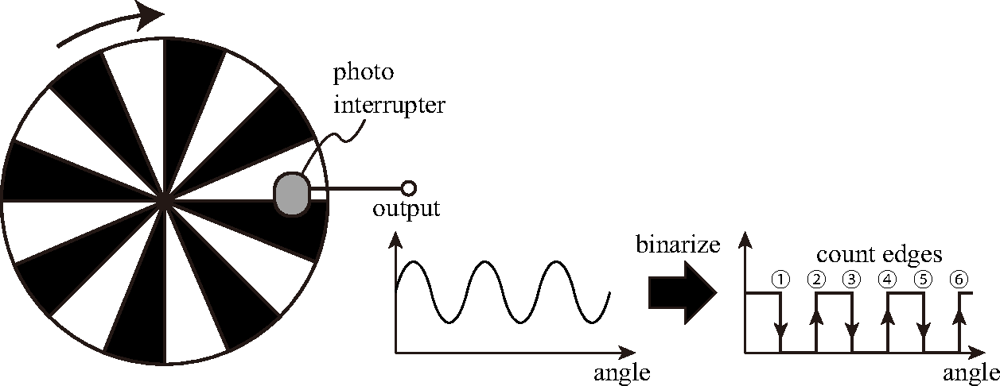
Now, if the rotation direction is determined to be only one direction, this is fine, but when rotating in both directions, the above mechanism counts up regardless of the rotation direction, so it is useless. Therefore, when rotating in both directions, two photo-interrupters are used.
As shown in Figure (Fig.), two photo-interrupters are placed at positions shifted by 1/4 period of the slit pattern (or \((n+1/4)\) period where \(n\) is an integer). The outputs of these two interrupters are called A-phase signal and B-phase signal. A-phase signal and B-phase signal are shifted in phase by 90 degrees like the relationship of sin and cos, but the way of phase shift changes depending on the rotation direction. If B-phase leads by 90 degrees in positive rotation (Clockwise, CW rotation), B-phase lags by 90 degrees in reverse rotation (Counter-Clockwise, CCW rotation).
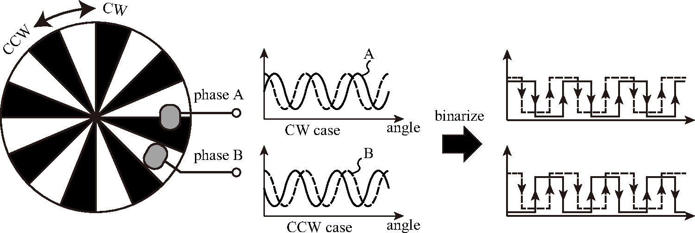
Therefore, by performing calculation like Figure (Fig.) for A-phase and B-phase signals pulsed with appropriate threshold, rotation angle can be measured correctly including rotation direction. In Figure (Fig.), only edges of A-phase pulse are counted, which is called 2x counting (Counting rising edge is basic, counting falling edge too makes it 2x). Furthermore, doing similar counting for B-phase pulse doubles resolution (this is called 4x counting). Since we want to make encoder resolution as high as possible, program it to do 4x counting.
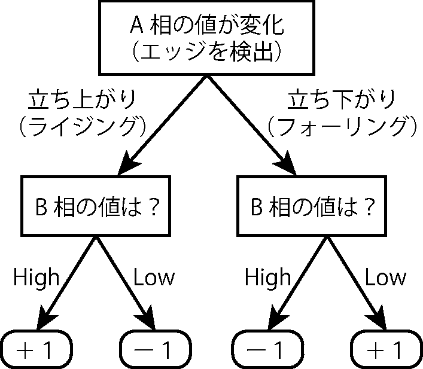
Fabrication of Rotary Encoder¶
Installation of Scale¶
When producing an encoder, first decide the installation location of the scale and the resolution of the scale. Installation locations are generally \"attach to motor shaft\" or \"attach to tire (wheel)\". When attaching to the tire, remove the tire from the shaft once (remove 1 nut in the center of the tire. Do not remove other screws), and stick paper printed with scale on the inside of the wheel with double-sided tape. However, if the paper is flimsy, the distance between the scale and photo-interrupter fluctuates, so it is better to stick the scale on a prepared plastic plate (green disk) and stick the whole plate to the wheel.
Note that tires will be reused by the next group, so perform work within the range where original state can be restored.
When attaching to the motor shaft, attach paper printed with scale to the shaft slightly protruding behind the motor. In this case, use double-sided tape or tape glue skillfully to stick. It is difficult to stick firmly, but since almost no force is applied, light adhesion is sufficient (instead, make the scale as light as possible). When installing on the motor side, resolution increases by the reduction ratio (= ratio of tire radius and motor tip tube radius) compared to installing on the tire. Therefore, even a scale with coarse division number (e.g., 4 divisions every 90 degrees) provides sufficient performance.
The finer the pattern division number of the scale, the higher the resolution as a sensor, but fine scale requires high installation accuracy. This is because the finer the scale, the smaller the output change width of the photo-interrupter. If scale installation accuracy is low, distance between photo-interrupter and scale plate fluctuates with rotation, and baseline of photo-interrupter output also fluctuates. Therefore, with a fine scale, signal cannot be binarized well, and encoder does not work (see Figure (Fig.). If baseline fluctuates, threshold set according to a specific place cannot perform binarization at other places).
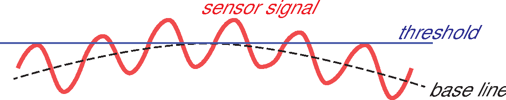
If scale is made coarse, sufficient signal amplitude is obtained even if photo-interrupter is placed somewhat away (about 5mm?) from scale plate. If distance is far, slight distance fluctuation does not matter. So, making scale coarse makes it easy to make, but coarse scale makes control rough. Find a good balance. In any case, scale installation accuracy is important. Fix the scale plate firmly to the wheel (see Figure (Fig.)).
Also, when deciding resolution of scale, keep photo-interrupter arrangement interval in mind. In the distributed kit, 2 photo-interrupters are already soldered on the board. Design the scale keeping this arrangement in mind. Design is done on a PC. You can design with Draw type software, or draw a pie chart in Excel etc. and use it as a scale. After designing, print with a printer (convenience stores can print if no printer) and cut out. If printing is absolutely impossible, draw manually. Black parts are filled with magic pen etc., but depending on the pen, even if it looks black, it may reflect infrared light easily (= not recognized as black by photo-interrupter), so be careful.
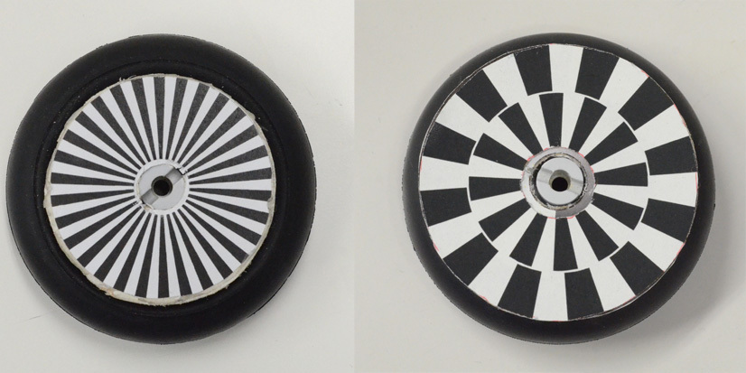
Soldering Photo-interrupter¶
Reading of scale is done by photo-interrupter. Referencing the inclination angle sensor, solder a photo-interrupter to a (scrap) universal board, and attach it to the universal board with an L-bracket etc. (see Figure (Fig.)). Boards will be supplied, so please ask. Points of soldering work will be explained in the exercise. Please listen to the explanation well before doing it (especially those not used to soldering work). (See Figure (Fig.).)
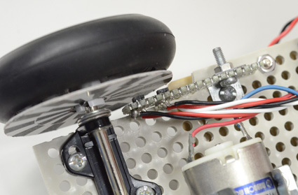
Adjustment and Reading of Photo-interrupter¶
After attachment to machine, connect wiring and resistors of photo-interrupter to breadboard. Although not drawn in distributed circuit diagram, connect in same way as inclination sensor. However, select resistor value connected to phototransistor according to your own design. (By the way, resistance value of inclination angle sensor at bottom of machine is 12k\(\Omega\)). In many cases, distance to target will be closer than inclination angle sensor, so reflected light amount will increase. In that case, output saturates unless resistance value is reduced (when looking at output waveform, upper side is cut off and becomes flat). As a guide, around 1k\(\Omega\) to 5k\(\Omega\) is good.
After completion of attachment and wiring, determine threshold for binarization while looking at photo-interrupter output with simple oscilloscope. After confirming that phases of two binarized signals are shifted by roughly 90 degrees, write counting program referring to Figure (Fig.). Phase difference does not need to be perfectly 90 degrees, but if order of edges is swapped, rotation direction will be read wrongly, so care is needed (Phase difference just needs to be larger than 0 degrees and less than 180 degrees). If desired phase difference is not obtained, adjust mounting position etc. (Make sure to rotate tire once and confirm readable at any position).
Task B: Add Encoder Feedback to Code and Debug (Student B)¶
[]
How this relates to the weekly schedule¶
Week 1: your goal is to achieve a basic stand-up using P-only angle feedback (see see Section [[sec:w1-standup-pre-encoder]](#sec:w1-standup-pre-encoder)). Week 2 and beyond: continue tuning and improvements (including angular velocity, filtering, and adding D gain). This section provides the detailed procedure and safety notes.
Using the Complete Control Program¶
The complete inverted pendulum control program is provided in 2. This is not just a debugging tool---it is the complete example program for inverted pendulum control that implements PD control, sensor reading, motor control, and real-time data visualization.
Quick Start (Using Pre-compiled Binary):
-
Flash to mbed by drag-and-drop
-
Press reset button on mbed
-
The program starts with 1 second idle period
Understanding and Modifying the Program:
If you want to understand how the control works or adjust parameters, open in Keil Studio Cloud. The program structure is:
-
Lines 3-11: Control parameters (
SAMP_FREQ,VLIMIT,VOFFSET,KP,KD) -
Lines 17-30: Pin definitions (LEDs, motor, sensors)
-
Lines 70-132:
int0()interrupt function---the main control loop -
Lines 134-161:
main()function---initialization and startup
To adjust control parameters, simply modify the #define values at the top of the file, recompile, and flash to mbed. The initial program has only proportional control (KP = 1.0, KD = 0.0). You will add derivative control later in this section (see "Inversion adding Derivative Control").
If you modify the program, click \"Save\" and \"Compile\". If there are no errors, an executable file (.bin) is downloaded, which you can then flash to mbed. However, for initial testing, you can use the pre-compiled file directly.
Preparation for Communication¶
This time, a 6-channel oscilloscope is prepared to monitor the state of mbed in real time. First, install Processing according to the instruction in the appendix3. The oscilloscope tool is located in .
How the Oscilloscope Works: The mbed program () runs a control loop at 2000 Hz. In each iteration, it reads sensors, calculates control outputs, drives the motor, and transmits 6 data values to the PC via USB serial at 230400 baud. The data is sent using a frame-based protocol: each frame starts with two header bytes (0xAA 0x55) followed by 6 data bytes (each 0-255). The Processing program () continuously reads the serial port, searches for the header pattern to synchronize with the data stream, extracts the 6 data bytes, and plots them in real time. This protocol ensures reliable data transmission even if some bytes are corrupted or lost.
Using the Oscilloscope: Flash to mbed (or compile the .cpp file yourself if you want to modify control parameters). After installation is complete, open in Processing and press the triangular run button to open the oscilloscope screen. The screen is divided into top and bottom. 3 pieces of data in the upper half, 3 pieces of data in the lower half, a total of 6 pieces of data are displayed. If 6 pieces of data are sent every repetition period in the mbed program, they are displayed in the order sent (Upper screen R: Red, G: Green, B: Blue, Lower screen Red, Green, Blue order). However, immediately after launching the oscilloscope screen, it may not be in the correct order. By resetting mbed once after launching the screen, the display is also reset to the correct order (this re-synchronizes the frame alignment).
An example oscilloscope screen is shown in Figure (Fig.).
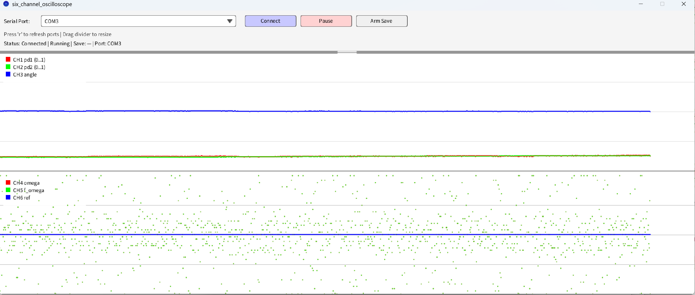
The program is designed to display: (CH1) output of photo-interrupter 1 (Upper screen Red), (CH2) output of photo-interrupter 2 (Upper screen Green), (CH3) the difference between both outputs = equivalent to inclination angle (Upper screen Blue), (CH4) angular velocity = derivative of inclination angle (Lower screen Red), (CH5) filtered angular velocity (Lower screen Green), and (CH6) reference line at 128 (Lower screen Blue).
Initial Settings¶
Finally Experiment. But before that¶
It's finally the experiment, but before that, let's understand the power supply mechanism of this board.
The battery box supplies power to the entire board (mbed + motor + photo-interrupter), and turning on the battery box activates the entire inverted pendulum (at this time, the LED on the board lights up). Since the motor continues to operate while the battery box is on, please turn off the battery box frequently except when necessary = when doing inverted experiments.
On the other hand, even when the battery box is off, connecting mbed to a PC with a USB cable supplies power to mbed only via USB cable (Power is not supplied to the motor and photo-interrupter from USB). At this time, the red LED on the board should be off, but since the blue LED of mbed shines brightly, there are cases where experiments are done without realizing that the battery box power switch is off. If the photo-interrupter output is strange or the motor does not move, check the battery box switch.
Zeroing the Inclination Sensor¶
Since it is troublesome if the motor moves in this work, disconnect the connection between the motor and the motor driver. With the USB cable connected to mbed, zero the sensor with the following procedure.
-
Reset with the reset switch in the center of mbed (= Program start).
-
Since the program is set to be in an idle state for 1 second after start, turn on the battery box power switch during that time.
-
Stand the machine vertically while supporting it by hand.
-
Check the inclination angle (blue line) displayed on the upper screen of the oscilloscope and confirm that it is approximately 0 (= center of the screen. Since 128 is added and sent from the program, the oscilloscope line comes to the center of the screen when sensor output is 0) when in the vertical state. If not, fine-tune the bending angle of the L-bracket attaching the sensor (Universal board is easily broken, so adjust by holding both ends of the bracket without applying force to the board).
Trying Inversion (Proportional Control)¶
After sensor adjustment is finished, let's invert it4. Only P gain is set in the initial program (KP = 1.0, KD = 0.0), so proportional control is performed.
-
Turn off the battery box power and reconnect the motor and motor driver. The USB cable can remain connected.
-
After connecting the motor, reset mbed, turn on the battery box power switch within 1 second, and stand the machine vertically. Control starts 1 second after reset.
-
Observe the reaction of the machine while lightly supporting it by hand. Support it gently so as not to fall, and check how the inverted pendulum wants to move. If the inverted pendulum moves in the direction it fell, it is correct. If it moves opposite to the inclination (= tries to fall by itself), the motor connection is reversed, so turn off the power once and swap the 2 wires connecting the motor and driver (or 2 wires connecting mbed and motor driver).
Lucky people might invert perfectly with just this. If it does not invert perfectly, it will likely move like a simple harmonic oscillation. Proportional control is just a spring, so if there is no loss such as friction, the response becomes simple harmonic oscillation.
Gain Adjustment¶
Next, let's change the P gain and see the machine response. People who can invert at this point should lower the P gain once (to about half or less for now). Check the operation of the machine while gently holding the top of the machine or the USB cable so as not to hinder the movement of the machine (and not to fall).
-
When P gain is low, relaxed (= about 1, 2Hz) simple harmonic oscillation is seen.
-
Increasing P gain (= stiffening the spring) increases the oscillation frequency and decreases the oscillation amplitude.
-
Raising the gain to some extent stabilizes it with almost no vibration (some tingling vibration may remain).
-
If the gain is increased too much, high frequency vibration (image of about 5Hz or more in the case of this machine) like rattling appears.
-
Increasing further results in violent vibration.
The state of 3 above is ideal, so adjust the gain to become state 3 after changing the gain from small to large. In the case of a machine with little friction, vibration may not completely disappear with P control alone. In that case, adjust to the gain where vibration is minimized.
Note that relaxed vibrations seen in 1 and 2 are not particularly harmful (just low stability), but high frequency vibrations in 4 and 5 can lead to heat generation and burnout of electronic parts and motors due to excessive current. Also, there is a risk that screws loosen due to vibration and the machine breaks, so avoid this state as much as possible.
If rattling vibration occurs, turn off the switch immediately.
Calculation of Angular Velocity¶
Next, add derivative control. Derivative control feeds back the derivative of inclination angle = inclination angular velocity, so first calculate the angular velocity. Since mathematically strict differentiation cannot be performed, the difference between the previous angle and the current angle is used as an approximate value of differentiation. That is,
$$
\dot{\theta} \simeq \frac{\theta - \theta_1}{T_s}
\label{eq:theta_diff}
$$
where \(\theta_1\) is the inclination angle in the previous process, and \(T_s\) is the repetition time (sampling period). This process is already implemented in the program (line 79-80 in the int0() function).
Since differentiation (difference) has the effect of amplifying high-frequency signals, the angular velocity obtained above contains a lot of high-frequency noise. If used for feedback as it is, fine vibration occurs due to noise (makes a \"shhh\" sound). In this state, a large current flows through the motor, which is not good for the circuit, so apply a low-pass filter (LPF) within the program to remove high-frequency noise.
There are two types of digital filters that can be realized by programs: IIR (Infinite Impulse Response) and FIR (Finite Impulse Response), but since phase delay is a problem in feedback control, a filter with as little phase delay as possible is preferred. Since FIR tends to introduce extra phase delay in the high frequency region, we use IIR, where phase delay is easy to grasp, to make a filter this time.
The higher the order of the filter, the better the cutoff performance, but the higher the order, the more the phase delay increases. Therefore, here we use the \"first-order low-pass filter (first-order lag filter)\" which is the simplest and has the least phase delay. The pulse transfer function of the first-order low-pass filter obtained by bilinear transform is: $$ F(z) = \frac{1+z^{-1}}{(1+\frac{2T}{T_s})+(1-\frac{2T}{T_s})z^{-1}} \label{eq:firstorder} $$ where \(T\) is the time constant of the first-order lag, and \(T_s\) is the sampling period. The reciprocal of the time constant \(T\) is the cutoff angular frequency (rad/s). Decide an appropriate cutoff frequency and calculate the filter coefficients (be careful about the relationship between \"Hz\" and \"rad/s\").
Matlab may be used to calculate filter coefficients. In Matlab,
[b,a] = butter(1,0.01);
Typing this gives the coefficients of a 1st order low-pass filter. Here, the 1st argument of butter (function to find Butterworth filter) is \"filter order\", and the 2nd is \"cutoff frequency normalized by Nyquist frequency\" (= ratio to Nyquist frequency. Nyquist frequency is half of sampling frequency). Equation \(\eqref{eq:firstorder}\) does not apply frequency pre-warping, so manual calculation with this equation causes a slight shift in cutoff frequency due to frequency distortion of bilinear transform, but Matlab's butter function performs frequency pre-warping, so the specified cutoff frequency is obtained.
Note that in a first-order lag filter, phase starts to delay from a frequency 1/10 to 1/5 of the cutoff frequency5. The process of differentiation advances the phase of a sine wave by 90 degrees (differentiating sin becomes cos with phase advanced by 90 degrees), so if phase delays, it does not become correct differentiation processing. Considering the vibration frequency of the machine in the proportional control of the previous section (which needs to be suppressed by derivative control), set the cutoff frequency of the filter to 10 times or more (at least 5 times or more) that frequency so that correct differentiation is obtained at that frequency.
For example, if vibrating at about 2Hz, set the cutoff frequency to e.g. 20Hz (= 40\(\pi\) rad/s) or more. Afterwards, adjust as necessary while observing the state of response in actual inverted experiments.
To turn the obtained pulse transfer function into a program, proceed as follows. First, make the transfer function a rational polynomial (fraction of polynomials) with respect to \(z^{-1}\), and divide the denominator and numerator so that the constant term of the denominator becomes \(1\). Let the coefficients of the polynomial obtained thereby be \(b_0, b_1, b_2, ...\) for the numerator, and \(a_0 = 1, a_1, a_2, ...\) for the denominator. Since it is a 1st order filter this time, the numerator is only \(b_0, b_1\), and the denominator is only \(a_0 = 1, a_1\). Note that if calculated with Matlab, these coefficients are obtained directly. At this time, the transfer function is: $$ F(z) = \frac{b_0 + b_1 z^{-1}}{1 + a_1 z^{-1}} = \frac{Y(z)}{X(z)} \label{eq:firstorder_tf} $$ where \(X(z)\) is the signal input to the filter (Z transform), and \(Y(z)\) is the filter output (Z transform). Recall that the transfer function is the ratio of input and output (Z transform).
Rearrange this and inverse Z transform to fix into a program. $$ \begin{aligned} (1+a_1 z^{-1})Y(z) &= (b_0 + b_1 z^{-1})X(z) \ Y(z) + a_1 z^{-1} Y(z) &= b_0 X(z) + b_1 z^{-1}X(z) \end{aligned} \label{eq:firstorder_rearrange} $$ Inverse Z transform: $$ \begin{aligned} y[n] + a_1 y[n-1] &= b_0 x[n] + b_1 x[n-1] \ y[n] &= b_0 x[n] + b_1 x[n-1] - a_1 y[n-1] \end{aligned} \label{eq:firstorder_time} $$ Just write this as a program. Showing only the main part (variable declaration omitted. Left side is line number for explanation):
1: y = b0 * x + b1 * x1 - a1 * y1;
2: x1 = x;
3: y1 = y;
This completes it. Line 1 is filter calculation, and lines 2 and 3 save input and output (\(x[n], y[n]\)) in this cycle so that they can be referenced as previous values (\(x[n-1]\), \(y[n-1]\)) in the next cycle.
Once the program is written, let's see how the angular velocity signal changes before and after the filter on the oscilloscope screen. Modify the program to output values before and after the filter to the oscilloscope. If the filter is working correctly, you should be able to confirm that noise is reduced. Note that it is fine if some noise remains in the filter result. If you filter so much that noise becomes completely invisible, you have over-filtered. In that case, I think there will be a large delay in the signal. Filtering always causes time delay, but if it is obviously delayed visually, it is over-filtered. Increase the cutoff frequency to weaken the filter effect.
Inversion adding Derivative Control¶
Once angular velocity can be calculated, let's add D gain and perform PD control. Multiply D gain by the angular velocity passed through the filter to match equation \(\eqref{eq:pd}\). For a machine that is already stable with only P control, adding D gain may not look like stability has increased, but the effect of D gain should appear in response to disturbance. To give a disturbance, lightly poke the inverted machine with a finger. Without D gain, it will recover the inverted state while wobbling, but with appropriate D gain, the vibration converges quickly (depending on the machine, the effect may not be very visible).
Let's actually change the magnitude of D gain and see the response. The magnitude of D gain (here) is roughly several tenths (1/20?) of P gain. Note that theoretically, the larger the D gain, the better the vibration should dampen, but in reality, if the D gain is too large, the vibration increases instead, so be careful6. If the machine is shivering, it is possible that D gain is too large, so try lowering D gain (depending on the machine, D gain 0 might be best).
Summary so far¶
If it inverts without large vibration and disturbance response becomes smooth, it is tentatively complete. Since position feedback is not applied, it is inevitable that the inverted pendulum gradually runs away (and falls).
Up to this point, you should arrive without problems if you make it as explained, but the real part of the exercise starts here. From here on, you will proceed with production while thinking for yourself.
Position Control¶
Once position can be read, similarly to inclination angle control, first apply only proportional gain (\(K_x\)) to position (and add it to manipulated variable of inclination angle control) to control. Specifically, motor voltage is $$ v_m = K_p \theta + K_d \dot{\theta} + K_x x + K_v \dot{x} \label{eq:vm_pos} $$ (At this point, position derivative gain \(K_v\) is zero).
Correct sign of gain \(K_x\) is unknown whether positive or negative (depends on setting of each rotary encoder). Try it for now, and if machine oscillates back and forth, sign is correct. If it runs away in one direction without oscillating, sign of position gain is reverse (or rather, encoder output is reverse), so change sign and try again (fixing encoder program is also fine).
Once correct sign is known, change magnitude of proportional gain and check change in response. While gently supporting machine by hand, try operating it with intention of reading movement of inverted pendulum. If gain is small, it oscillates slowly and largely, and if large, it oscillates fast and finely. In inclination angle control mentioned before, machine might have been stilled only with proportional gain, but regarding position control here, only oscillating response can be obtained with proportional gain alone (and due to signal delay and back EMF influence, oscillation amplitude gradually increases).
Note that, as in inclination angle control experiment, excessive gain causes violent vibration. Violent vibration may lead to damage of parts, so if violent vibration occurs, turn off power switch immediately.
In many cases, around where it oscillates slowly (about 0.5Hz?) is just right proportional gain, so aim there and adjust. Since this vibration will be suppressed by derivative control set next, it is important that frequency of this vibration is within range where derivative control works (about 1/10 or less of cutoff frequency of low-pass filter). People with high resolution encoder can set cutoff frequency of velocity filter high, and can dampen up to higher frequency, so it is okay to adjust to faster vibration (response of position becomes more agile that way). Perform adjustment keeping your own encoder performance and velocity low-pass filter characteristics in mind.
Generally, position control of inverted pendulum performs following interesting operation. When wanting to move machine to right, position control system (control realized by \(K_x\) and \(K_v\)) tries to rotate tire to opposite left direction. When tire moves left, machine falls right due to inertia, so inclination angle control system (\(K_p\) and \(K_d\)) turns tire to right to correct this inclination, and as a result machine moves right. In other words, position control system issues command to move in direction away from target position, contrary to intuition. However, since inclination angle control system is dominant, it moves in direction opposite to direction commanded by position control system as a result. Let's check what kind of operation inverted pendulum you produced performs.
Calculation of Velocity and Addition of Derivative Gain¶
Finally, calculate velocity and add derivative control. Calculation of velocity is done by differentiating (difference) output of encoder, but since output of encoder produced this time changes only occasionally (not counted unless tire rotates at least one scale pattern), simply taking difference from previous value results in strange velocity signal where impulse comes out only when encoder output changes. Apply low-pass filter to smooth this. Unlike angle differentiation, quite strong filter needs to be applied, so use 2nd order low-pass filter and set cutoff frequency low (design with Matlab butter function). However, setting cutoff low makes controllable motion frequency low as well. Position gain must be set low so that vibration frequency of machine position falls within controllable frequency range (consequently, spring constant of position control decreases, so machine may not stop perfectly and move unsteadily, this is unavoidable).
In this case, magnitude of derivative gain (velocity gain \(K_v\)) will be about same as proportional gain or fraction of it.7
Since resolution of position sensor (= encoder) is low this time, it will be difficult to completely suppress vibration as long as differential value of encoder is used as velocity. It is sufficient if adjusted to extent that vibration does not diverge (sways with constant amplitude).
If you want to improve performance more, try estimating machine velocity by another means without using differential of encoder. Specifically, use applied voltage to motor. Ignoring inductance and back EMF compensation, a simple DC motor model is: $$ \tau = \kappa \frac{v- \kappa\omega_m}{R} \label{eq:motor_simple_equiv} $$ In steady state, that is, state where velocity is constant, if friction is ignored, motor torque becomes zero. Looking at equation \(\eqref{eq:motor_simple_equiv}\), when motor torque is zero, applied voltage and back EMF (= proportional to velocity) match. Therefore, motor rotation speed (= machine velocity) should be estimable from applied voltage. However, this is story in steady state, so it does not hold when velocity is fluctuating. But if used thinking well around there, better control should be possible than relying only on encoder. Note that when estimating velocity in this way, it is better to build velocity control system instead of position control system (that is, P control on average value of back EMF instead of PD control on machine position). In this case, ignore explanation in next section.
Let's Run¶
Once it can invert at approximately constant position, run it. When running, change target position of control little by little. Specifically, command value of motor voltage is as follows. $$ v_m = K_p \theta + K_d \dot{\theta} + K_x (x - x_{ref}) + K_v \dot{x} \label{eq:vm_run} $$ \(x_{ref}\) in formula is target position of control. Since PD control regarding position is applied, machine is in state equivalent to being connected to target position with spring and damper. Therefore, if this target position \(x_{ref}\) is changed little by little in program, inverted pendulum should move as if pulled to target position (like walking a dog. However, since it is image of pulling with spring, vibration due to spring occurs. Tends to be like moving big and resting a little). For example, increasing target position by \(0.001\) every time in control loop, if control frequency is 2000Hz, it should advance 2 encoder pulses per second.
Note that immediately after starting inverted control, attitude control of machine is not yet sufficiently stable, so it is better to program to start changing target value after waiting about 1 second after starting inverted control.
The rest depends on ingenuity¶
After that, aim for high performance inverted pendulum by adjusting variously by yourself. Improvement of encoder, adjustment of control gain (including filter adjustment), and since motor rotation speed is known by encoder, it is good to think about motor back EMF which has been ignored so far.
Here are some adjustment points.
-
Combination of control gain, filter setting, target velocity is important. Trying various combinations will find setting that runs stably. Due to individual differences in parts and assembly, optimal setting differs for each machine.
-
Actually, this motor (not limited to this, many model motors of same type) has determined rotation direction, and characteristics (torque) differ slightly between positive rotation and reverse rotation. When rotating in direction where torque is weak, adding slightly (at most about 10%?) extra voltage may reduce difference in characteristics.
-
Since there is friction in motor itself and power transmission part of motor and tire, motor does not rotate losing to friction at small voltage near 0V. It might be good to add slight offset to command voltage to compensate friction. However, be careful as too large offset makes response of machine oscillatory. Setting value to
VOFFSET#defined at the top of adds offset (Value is safe up to about 0.01 at most). -
Since inclination angle is measured by reflected light amount from floor surface, gain of inclination sensor changes depending on infrared reflectance of floor surface. When moving on different floor surface, fine-tune control gain as necessary.
Task C: MATLAB Simulation with Encoder Feedback (Student C)¶
Role of Simulation¶
Computer simulation is a powerful tool for developing and validating control algorithms. Simulation provides a safe, risk-free environment for testing control strategies: mistakes do not damage hardware, and unstable controllers do not cause physical hazards. For the inverted pendulum, which can fall or move violently with improper control, simulation protects the motor, electronics, and mechanical structure from damage.
MATLAB and Simulink enable rapid iteration through controller designs. You can adjust parameters, observe system responses, and compare different strategies without repeatedly downloading code to the microcontroller or reassembling hardware. Simulation also clarifies the theoretical behavior of the system and builds intuition about how control parameters affect stability and performance. Parameters validated in simulation can then be transferred to real hardware with higher confidence.
Beyond this experiment, simulation is an essential skill for modern control engineers. The ability to model, simulate, and analyze control systems using professional tools like MATLAB/Simulink is widely used in industry and research, making this a valuable learning experience in its own right.
Setting Up MATLAB Environment¶
Accessing MATLAB at the University of Tokyo¶
The University of Tokyo provides MATLAB licenses for all members through a campus-wide license agreement. You can access MATLAB online or install it on your personal computer. Follow these steps to get started:
-
Access the UTokyo MATLAB information page: https://utelecon.adm.u-tokyo.ac.jp/matlab/
-
Follow the instructions under \"How to start using MATLAB\"
-
Create a MathWorks Account using your UTokyo email address
-
Link your MathWorks account to the UTokyo campus-wide license by signing in through the UTokyo portal
If you encounter any issues with license activation, refer to the utelecon support page or contact MathWorks support at service@mathworks.co.jp.
Required Toolboxes¶
For this experiment, you will need the following MATLAB products:
-
MATLAB (base installation)
-
Simulink - for building block diagrams and simulation
-
Simscape - for physical system modeling
-
Simscape Multibody - for multibody mechanical dynamics (inverted pendulum, joints, etc.)
-
Simulink Control Design - required if you want to linearize a Simulink/Simscape model and use model-based tools such as PID Tuner / Model Linearizer on the Simulink model
-
Control System Toolbox - recommended for analysis/design with LTI models (e.g., LQR, frequency response) and for PID Tuner when the plant is an LTI model
During the MATLAB installation process, make sure to select these products. If you have already installed MATLAB without them, you can add them later through the MATLAB Add-On Explorer (Home tab \(\rightarrow\) Add-Ons \(\rightarrow\) Get Add-Ons). The provided model uses Simscape and Simscape Multibody to represent the physical dynamics of the inverted pendulum (e.g. 3D mechanical components) rather than Control System Toolbox or hand-written state-space blocks.
Building the Simulink Model¶
This course provides a reference Simulink/Simscape model as a milestone example. The goal of the example is intentionally modest: it demonstrates how to build a physically meaningful plant model in Simscape Multibody, and how to stabilize an inverted pendulum by closing a feedback loop on the tilt angle using a PID controller. In the provided setup, the controller is tuned to balance the pendulum, while position and speed regulation are left as an extension task for students.
Figure (Fig.) shows the overall Simscape Multibody diagram of the plant used in the example. Even at this top level, the model is organized to mirror the real hardware: the cart is represented with wheel-related components and the "body" (the pendulum and its attached parts) is represented as a separate rigid assembly. This separation makes it easy to identify what parameters belong to the cart (wheel radius, wheel inertia, cart mass) versus what belongs to the pendulum body (mass distribution, length, and center of mass).
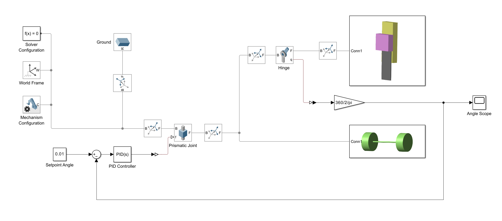
How the Plant is Built¶
The plant is built in Simscape Multibody by assembling 3D rigid bodies, joints, and fixed frame transforms. Instead of typing linearized state-space matrices, you specify physical properties---geometry, mass, and inertia---and Simscape Multibody derives the multibody equations of motion automatically. This approach is particularly suitable for this experiment because it stays close to the actual machine and makes it straightforward to change mass distribution (battery, breadboard, brackets) and see how the dynamics change.
In the provided model, the cart and the body are constructed primarily using two standard solid blocks: Brick Solid (rectangular block) and Cylindrical Solid (cylinder). Wheels, shafts, and spacers are naturally represented by cylindrical solids, while the body plate, brackets, and electronic modules are well approximated by brick solids. The objective is not photorealistic geometry; rather, it is to capture the dominant mass and inertia so that control design decisions made in simulation remain meaningful on hardware.
Figure (Fig.) shows the rigid body subassembly, while Figure (Fig.) shows the wheel subassembly used for the cart/wheel-related part of the plant.
| Body model in Simscape Multibody | Wheel model in Simscape Multibody |
|---|---|
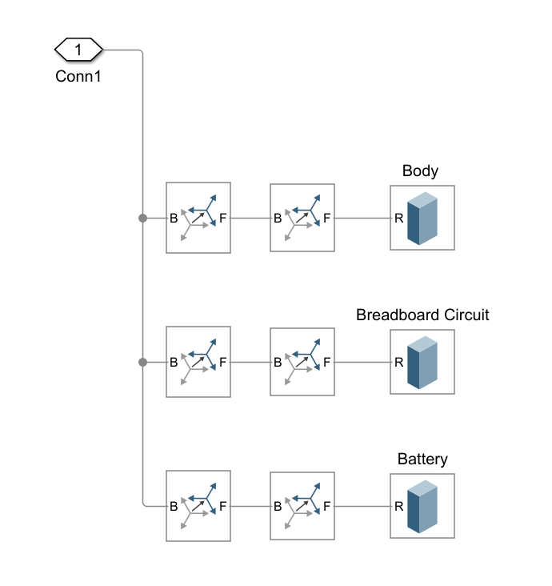 |
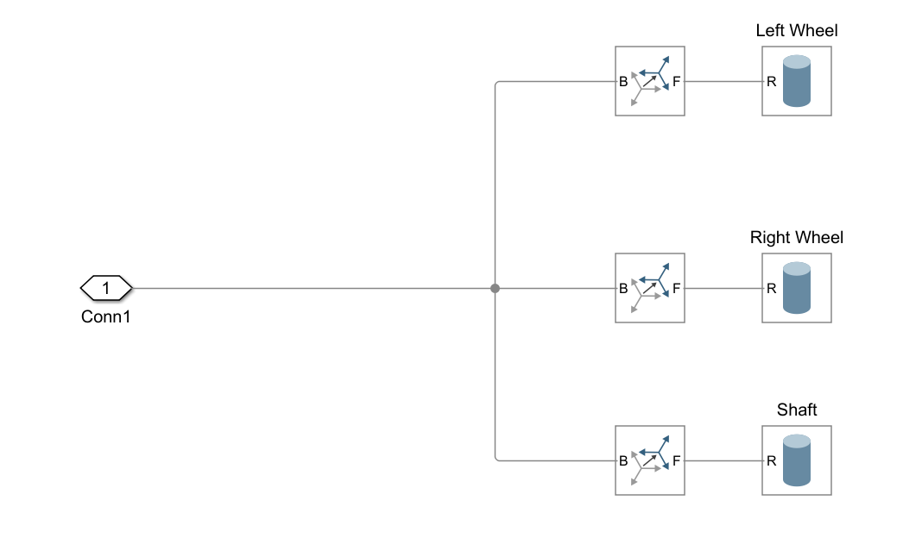 |
To connect these solid parts into a coherent rigid assembly, the model uses the Rigid Transform block. Rigid Transform defines a fixed relative translation and rotation between two frames, and is used throughout the model to place wheels relative to the cart frame, to set offsets between the pendulum body and its reference frame, and to position auxiliary masses such as the breadboard and the battery. In practice, the most important parameters in these blocks are the mass and size of the wheel and body solids, and the mass/size assigned to the breadboard circuit and battery modules. These parameters shape the inertia and therefore strongly affect how "aggressive" the stabilizing controller must be.
One advantage of the multibody approach is that you can visualize the 3D motion during simulation and directly connect measured signals (joint angles, positions) to the controller. If you prefer a purely analytical plant, you may also represent the dynamics using a State-Space block (Simulink \(\rightarrow\) Continuous) by entering the linearized \(A,B,C,D\) matrices derived earlier. Both representations are valid; this task focuses on understanding the multibody modeling workflow provided by the course.
Controller Internal Setup¶
The physical model contains joints that define how bodies move relative to each other. In the provided example, the body is connected to the cart through a hinge-like rotational joint, and the cart is allowed to move along the ground direction through a translational joint. In Simscape Multibody, the hinge joint is the Revolute Joint block. The cart translation is modeled using a Prismatic Joint block. These joints are not only mechanical constraints; they are also the main source of feedback signals in the simulation.
In the real hardware, the tilt angle is estimated from two photo-reflectors (photo-interrupter style sensors) that observe the reflected infrared light from the ground surface. The interaction between the wheel and ground is also not "measured" as wheel-ground friction; instead, the cart motion is the result of the motor drive and the ground reaction. To keep the milestone model focused and controllable, the simulation abstracts these realities: the tilt angle is taken directly from the Revolute Joint angle, and the cart-ground interaction is represented by the Prismatic Joint coordinate. This makes it straightforward to close a feedback loop while still reflecting the essential mechanical constraints of the system.
Figure (Fig.) highlights how the angle joint and the translation joint are configured in the provided model. The Revolute Joint provides the body angle (and, if enabled, angular velocity). The Prismatic Joint provides the cart position (and velocity). In addition, the Prismatic Joint is used as the actuation point in the milestone example: by driving the prismatic motion/force (depending on the actuation setting), the model produces cart motion that stabilizes the body. If you later implement position control, you will naturally read cart position from the Prismatic Joint, and if you implement velocity control you will either read prismatic velocity directly or estimate it through encoder-like quantization (see the assignment at the end of this section).
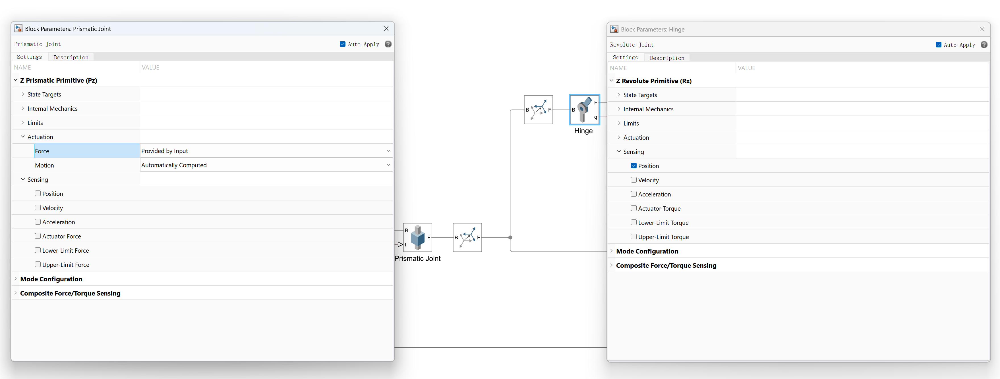
With these signals available, the controller block closes the stabilizing loop. In the milestone example, the controller uses only the pendulum tilt angle as the primary feedback signal, i.e., it is an angle-only stabilizer. Position and speed loops are intentionally left out of the default configuration so that students can extend the model systematically.
The high-level PID controller subsystem is shown in Figure (Fig.).
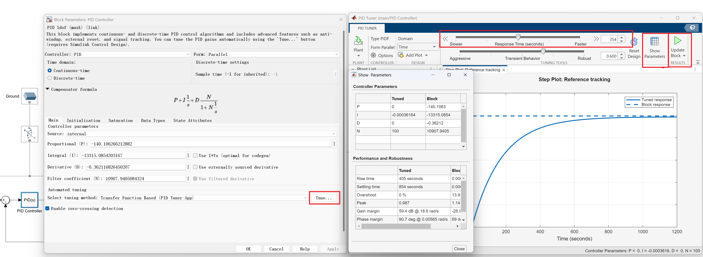
Running the Simulation¶
Locate the provided .slx model file in the course material folder and open it in MATLAB. Before running, configure the simulation to match a realistic digital control loop. In Simulation \(\rightarrow\) Model Configuration Parameters (Ctrl+E), use a fixed-step solver and choose a step size consistent with your intended control frequency (for example, 1 ms to match a 1 kHz loop, or another value if your real implementation uses a different rate). Matching the sample time is important because it affects stability margins and makes simulation results more predictive when you later transfer the controller to hardware.
To observe stabilization, set a small initial tilt angle in the Revolute Joint (for example, \(\theta(0)=0.1\) rad \(\approx 5.7^\circ\)) so the controller has a disturbance to reject. Then run the simulation and open the angle scope to check whether the angle converges back to the upright equilibrium. If the model includes a disturbance input, you can also inject a brief impulse or step disturbance and examine how quickly the controller recovers.
PD Controller Design and Parameter Tuning¶
The milestone controller focuses on balancing and therefore uses only the pendulum angle as feedback. In its simplest form, this is a PD law based on the angle \(\theta\) and angular velocity \(\dot{\theta}\):
Here, \(u\) represents the actuation signal that drives the cart motion in the model. The proportional term provides the restoring tendency toward upright posture, while the derivative term provides damping that suppresses oscillation. In practice, angular velocity feedback is often filtered to reduce sensitivity to measurement noise; the Simulink PID block provides an internal derivative filter parameter for this purpose.
Accessing and Adjusting PID Parameters¶
To modify the gains, open the controller subsystem (Figure (Fig.)) and double-click the PID block responsible for angle control. The block dialog exposes \(K_p\), \(K_d\), and the derivative filter coefficient \(N\). The provided model contains one working parameter set as a starting point; however, you should still change gains deliberately and observe how the time response changes, because the most valuable outcome of this task is understanding the relationship between physical parameters (mass/inertia) and control aggressiveness.
If you want to tune more systematically, use the PID Tuner workflow. From the PID block dialog, select the tuning method that opens PID Tuner and click Tune. PID Tuner linearizes the plant at an operating point and proposes gains based on a chosen design focus. In this experiment, it is recommended to set the target response speed to match the real control bandwidth implied by your sample time. After tuning, use the button that updates the tuned gains back to the PID block so the simulation runs with the new parameters.
Analyzing Simulation Results¶
After running the simulation, use the angle scope to evaluate whether the inverted pendulum is truly stabilized. A good stabilization run shows the angle converging back to zero (upright) with bounded overshoot, and the control effort decreasing as the system approaches equilibrium. If the model contains a control input scope, check that the actuation signal does not remain saturated for long periods; persistent saturation typically indicates gains that are too aggressive or a plant configuration that requires re-checking mass/inertia parameters.
An example simulation result is shown in Figure (Fig.).
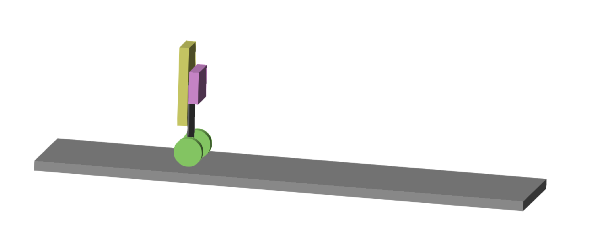
What to Look For¶
In a healthy run, the angle response should return toward zero with a decay of oscillation, and should not drift away over time. If the response diverges, the stabilizing gains are effectively too weak or have the wrong sign. If oscillation persists with nearly constant amplitude, damping is insufficient (derivative gain/filtering may need revision). If the response is extremely slow, gains are too conservative. If the actuation saturates for long durations, reduce aggressiveness or revisit the plant parameters (for example, overly large mass assignments to battery/breadboard can easily make the plant harder to balance).
Optional Extensions¶
Once you can stabilize the angle in the milestone model, there are many directions to extend the simulation. A natural next step is to add outer-loop regulation for cart position and cart velocity using the signals available from the Prismatic Joint. Another direction is to compare manual PID tuning with more systematic methods such as full-state feedback or LQR, using the same test scenarios so that performance trade-offs are clear.
From Simulation to Real Hardware¶
Once you are satisfied with simulation behavior, you can transfer the controller concept to the real hardware. However, it is important to remember what the simulation abstracts away. In hardware, the angle sensor is built from two photo-reflectors and therefore includes noise, floor reflectance dependence, and nonlinearities. Similarly, in hardware the cart motion is generated by motor torque and wheel-ground interaction, not by a perfectly actuated prismatic joint. This is why matching sample time and keeping control effort within realistic limits are critical if you want simulation results to remain useful.
Discretization¶
The microcontroller implementation is discrete-time (sampling-based). Even if you use a continuous-time PID block in Simulink, the real controller will effectively operate with a sample time \(T_s\). For an inverted pendulum, \(T_s\) in the 1--10 ms range is typical. A smaller \(T_s\) generally improves phase margin and stability, but it also increases computational load and may magnify noise if velocity is estimated by differencing a quantized encoder signal.
In the provided mbed code (see Section [sec:inverted-experiment]), the timer interrupt is typically set to 1 ms (0.001 seconds), which corresponds to a sampling frequency of 1000 Hz. Make sure your Simulink simulation uses a fixed-step solver with the same time step for accurate prediction.
Parameter Transfer¶
Record the final \(K_p\) and \(K_d\) values from your Simulink model. These will be directly entered into your mbed program as variables. For example, if your simulation uses \(K_p = 50\) and \(K_d = 5\), you will write in your mbed code:
float Kp = 50.0;
float Kd = 5.0;
Make sure the units are consistent. In simulation, angles might be in radians, while your sensor readings might need conversion from encoder counts to radians.
Expected Differences Between Simulation and Reality¶
No simulation is perfect, and you should expect gaps between simulated and actual behavior. Model parameters (mass/inertia), unmodeled friction and backlash, and actuator saturation/dead-zone effects all matter. On the sensing side, real signals are noisy and quantized: photo-reflector angle estimates drift with floor reflectance, and encoder-based velocity estimates can become very noisy if obtained by simple differencing. Finally, computational delays and discretization can reduce stability margins. Therefore, treat simulation as a safe environment to validate ideas and obtain reasonable initial gains, then tune conservatively on the real system.
Assignment: Add Position and Velocity Loops with Encoder-like Feedback¶
The milestone model stabilizes only the tilt angle. Your task is to extend it toward a more realistic control system by adding outer-loop regulation for cart motion and by modeling encoder-like feedback. A typical direction is to add a position loop that generates a velocity command, then a velocity loop that generates the actuation command used by the plant, while keeping the angle stabilizer as the innermost loop. You do not need to follow a single prescribed architecture, but you should clearly describe your chosen loop structure and justify it using simulation evidence.
To mimic an encoder, do not use perfect continuous position and velocity signals directly. Instead, quantize the cart position into discrete counts, then reconstruct velocity by differencing (and filtering if needed). This will naturally introduce the same kind of jitter and delay that you will face on hardware. Use this encoder-like signal path to close the position/velocity loops and examine how robust the balancing behavior remains.
Finally, evaluate your extended controller under meaningful commands and disturbances. At minimum, test a set of position references that includes a step, a ramp-like motion, and a back-and-forth (reciprocating) motion such as a sine wave or a piecewise constant command that alternates between two positions. In addition, add an external disturbance input (for example, a short impulse/force applied to the cart or body) and record how quickly the system returns to balance. Your report should include time responses of angle, cart position, and control effort, together with a short discussion of tuning decisions and the observed limits (saturation, oscillation, sensitivity to quantization noise).
Supplements: Troubleshooting & Speed¶
Supplement 1: Huh? Motor became weak? If you think so¶
Breadboard has relatively large contact resistance, and especially around motor driver where large current flows, troubles caused by that contact resistance tend to occur. If you think motor power became weak, try inserting and removing motor driver and jumper wires around it several times.
This driver flows maximum 1A current to motor (voltage at that time is about 1V). On the other hand, jumper wire is only in contact sandwiched by 2 metal plates inside breadboard, and there is certain contact resistance in that contact part. For example, if contact resistance is 0.5\(\Omega\), voltage drop when 1A flows here is 0.5V, which becomes value that cannot be ignored compared to motor drive voltage.
Actually contact resistance is not that large, but it seems there are many cases where contact resistance increases over time due to oxidation of metal on terminal surface. Especially, there is a story that contact part where large current flows generates heat by contact resistance, and that heat promotes oxidation and contact resistance tends to increase. In other words, very inconvenient situation for motor and driver exists on breadboard. Therefore, if you feel \"Performance became worse though program is unchanged from before\", suspect increase in contact resistance. By inserting and removing driver chip and jumper wires several times, oxide film on surface can be removed and contact state can be restored.
Pay special attention to path where large current flows around driver. Tracing current path to motor: \"Battery + pole\" \(\rightarrow\) \"VCC terminal (of driver)\" \(\rightarrow\) \"OUT1(or 2) terminal\" \(\rightarrow\) \"Motor\" \(\rightarrow\) \"OUT2(or 1) terminal\" \(\rightarrow\) \"ISEN terminal\" \(\rightarrow\) \"GND\" \(\rightarrow\) \"Battery - pole\". It is good to check this path intensively.
Supplement 2: For Speeding Up¶
According to datasheet (not simplified version distributed, but formal datasheet issued by TI8), motor driver used this time has protection circuit that works when current exceeds 1.3A and trips (cuts off circuit and makes current 0A). When actually connecting motor and measuring, it has been confirmed that it trips at around average current 1.1A probably because motor current is pulsating. Since motor stops when tripping, the control program sets upper limit of motor voltage so as not to trip driver (see VLIMIT definition in ). Let's consider this upper limit value.
Relationship between voltage \(V\) applied by motor driver to motor and current \(I\) actually flowing in motor is expressed as follows if inductance of motor winding is ignored. $$ V = (R_m + R_c) I + \kappa\omega_m \label{eq:motor_voltage_current} $$ where \(R_m\) is winding resistance of motor, \(R_c\) is resistance of motor drive circuit, \(\kappa\) is back EMF constant (\(\approx\) torque constant), \(\omega_m\) is motor rotation speed (rad/s). In this motor, winding resistance \(R_m\) (fluctuates depending on how brush inside motor hits = angle of motor shaft) is estimated to be about 0.7\(\Omega\) on average, and back EMF constant \(\kappa\) about 2.7mV s/rad. Circuit resistance \(R_c\) is about 0.5\(\Omega\) (Assume ON resistance of driver 0.45\(\Omega\) + resistance of breadboard 0.05\(\Omega\)). Most current flows when motor rotation speed is zero where back EMF disappears, but to keep motor current \(I\) at this time below 1.1A, it is understood that driver output voltage \(V\) should be limited to 1.32V or less.
Motor driver is designed to output 4 times voltage applied to VSET pin to motor. Therefore, upper limit of voltage applied to VSET is 1.32/4=0.33V. VSET pin is connected to p18 (AnalogOut) of mbed, but to suppress voltage of p18 to 0.33V, upper limit of value written to p18 in program is \(0.33/3.3=0.1\) (1.0 corresponds to maximum value of DA converter = 3.3V). For this reason, the control program sets VLIMIT = 0.1 by default. (Note that since there are individual differences in drivers and motors, people whose driver trips immediately should try lowering this upper limit value a little).
Now, this is fine when motor is stationary, but when motor starts rotating, voltage decreases by back EMF, so sufficient current cannot flow with this upper limit. For example, if motor rotates 20 times per second (at this time, tire rotates about 2 times per second), back EMF of about 0.34V is generated. Then, even if upper limit 0.1 is written to p18 and driver generates 1.32V, only about 0.8A flows to motor. Since motor torque is proportional to flowing current, sufficient torque cannot be generated as it is.
Therefore, if you want to increase running speed of inverted pendulum, it is necessary to increase output upper limit according to speed taking above back EMF into account. If increased well, stable inversion can be maintained even at high speed (Be careful as driver trips and inverted pendulum falls easily if upper limit is not set well).
Supplement 3: Defect of Jumper Wire¶
In this practice, jumper wires for breadboard (wires with pins installed at both ends to be easily inserted into breadboard) are used. Pin part of this jumper wire rarely breaks. Operation failure due to disconnection of jumper wire is quite difficult to find, but when \"Circuit should be built correctly, but it doesn't work at all!\", suspect defect of jumper wire. To actually find defect of jumper wire, pull out jumper wire of suspicious place and check continuity with tester.
Such defects are often caused by poor handling of jumper wires. Be careful not to forcibly bend or pull jumper wire (tip part). Even if you do not suffer damage, next group person might suffer damage.
Week 2 Submission¶
Submission
Your system should demonstrate encoder-based position/velocity sensing and improved stability with position control. Submit a single group report containing:
Deliverable Max Scoring guide
Position-control video 8 8 pts: inversion \(\geq\)10 s within \(\pm\)0.5 m of set-point.\ 5 pts: inversion held but position drift is large.\ 0 pts: inversion lost within 5 s.
Encoder A/B plots 7 7 pts: A/B waveforms clearly labeled and direction reversal verified (CW vs. CCW phase shift).\ 5 pts: waveforms shown but direction not verified.\ 2 pts: pulse count only, no phase analysis.\ 0 pts: not submitted.
Sim vs. hardware comparison 5 5 pts: \(x(t)\) and \(\dot{x}(t)\) plots for both sim and hardware, with discrepancy explained.\ 3 pts: plots included but no explanation of differences.\ 1 pt: qualitative description only (no plots).
-
This time we use a reflective photo-interrupter so it is a black and white pattern, but generally transmissive photo-interrupters and slit disks are often used ↩
-
Access the course materials repository at https://github.com/UTokyo2026/UTokyo-Control-Practice-2026 ↩
-
Appendix app:processing: Processing Oscilloscope Manual. ↩
-
A video demonstration of the debugging and tuning process is available in the course materials repository: ↩
-
If using Matlab, freqz(b,a) or bode(tf(b,a,sampling time)) allows checking the frequency response of the filter. ↩
-
In a 1st order LPF, phase delays by 90 degrees in high frequency band. Considering the case where inclination angle changes sinusoidally, its derivative (= angular velocity) must be advanced by 90 degrees phase relative to inclination angle, but at high frequencies, phase delays by 90 degrees due to the filter, so passing the differentiation result through the filter results in the same phase as the original inclination angle. This is no longer differentiation. Therefore, at high frequencies, even if intending to do derivative control, it is actually the same as doing proportional control. Thus, easily increasing derivative gain makes proportional gain substantially large in high frequency band, resulting in oscillatory and unstable response.\ ↩
-
Ratio of P gain and D gain is easy to understand when compared with standard form of 2nd order lag. If spring constant and damping coefficient are \(K_p\) and \(K_d\), transfer function from external force to position is $$ \frac{X(s)}{F(s)}=\frac{1}{ms^2+K_d s+K_p}=\frac{1/m}{s^2+(K_d/m)s+K_p/m} $$ On the other hand, standard form is $$ G(s)=\frac{\omega_n^2}{s^2+2\zeta \omega_n s+\omega_n^2} $$ Comparing both, it can be seen that \(K_d/K_p = 2\zeta/\omega_n\). ↩